AntiBot/WAF GW is a reverse HTTP/HTTPS proxy that sits in front of a protected upstream application and filters automated and malicious traffic before it reaches the origin. Version 1.9.9 extends the original six-layer anti-automation design into a full layered defense stack combining bot/agent detection, a request-time Web Application Firewall (WAF), IP / reputation intelligence, and a risk-scoring engine with an operator console of eleven dashboards.
Every request passes through an aiohttp middleware chain. Each layer addresses a distinct attack surface used by CLI tools, scrapers, headless browsers, AI agents, and exploitation frameworks. Detections feed a weighted risk score; once a score crosses the (NAT-aware) ban threshold the identity enters a hostile pool and is served a silent decoy — the upstream homepage or a 404 — so the client cannot tell it was caught.
WAF_*_ENABLED kill-switch./secured/config and the operator dashboards without a restart.The build ships as a multi-arch container image (amd64 / arm64 / arm/v7) with a clean CVE posture (0 CRITICAL / 0 HIGH on all three arches) and is validated by a 20-stage release pipeline covering unit/functional/integration tests, mutation testing, SAST, dependency/image CVE scans, dynamic security testing, and a written per-release audit record.
The gateway runs as a single container behind a TLS-terminating front
(Cloudflare Tunnel in the reference deployment, which also injects the client
CF-JA4 TLS fingerprint). The front forwards to the gateway's
listener; the gateway applies all detection + WAF layers and proxies clean
traffic to the upstream origin.
Every request flows through the protect() middleware. Short-circuit
checks (IP-ban, admin-path gating, bypass paths, authorized-bot pass-through) run
first; then the detection + WAF layers accumulate risk; finally the risk verdict
selects forward / challenge / silent-decoy / ban.
Hot-path state (per-identity risk, token buckets, session/fingerprint maps,
recent events, timeline buckets) lives in memory for zero-latency reads. Durable
state (bans, config_kv, secrets, admin-IP ACL, audit, observational
metrics) is persisted to the datastore and rehydrated on boot. Security-critical
ban state is rehydrated synchronously before the server accepts traffic;
cosmetic dashboard state is rehydrated in a background task so the gateway accepts
connections within seconds of a restart. The persistent ip_bans
table keys on the raw IP and therefore survives session-cookie and fingerprint
rotation.
The layers below are grouped by attack surface. Each weighted signal is independently hot-toggleable and contributes to the identity's risk score; WAF layers are terminal (immediate silent-decoy on a confirmed match).
Blocklist of 60+ UA fragments (HTTP libraries, scanners, headless browsers,
and AI crawler bots such as gptbot, claudebot,
anthropic), plus empty / too-short / non-browser / platform-mismatch
signals against the declared Sec-CH-UA-Platform.
Suspicious-path regex (VCS metadata, backup files, traversal, SQLi/XSS/LFI
markers), advertised honeypot paths with no upstream (/.git/HEAD,
/.env, /actuator/env, …), hidden bot-trap form fields,
and an AI-labyrinth that bans clients which follow injected
rel=nofollow links.
Required-header allowlist, Accept-* / Sec-Fetch-*
presence, Sec-Fetch navigation coherence, Client-Hints vs UA consistency, and an
HTTP/2 SETTINGS fingerprint check.
Inter-arrival timing regularity, path-enumeration thresholds, HTML-without- assets ratio, and request-cadence autocorrelation — robotic-pattern signatures.
Heuristic JS cookie gate (auto-mint on first qualifying HTML GET), optional Cloudflare Turnstile, and a proof-of-work gate (strict "Anubis" mode for configured paths). Unsolved challenges are silently decoyed.
Per-IP and per-identity token buckets plus a global RPS cap; throttled traffic receives HTTP 429 with no risk penalty (pure back-pressure).
Canary tokens planted in responses (echo detection for LLM agents that replay page content) and referer-chain validation (ghost / loop signals).
JA3/JA4 handshake fingerprints matched against a deny-list; the challenge cookie is bound to the observed JA4 so it cannot be replayed under a different TLS stack.
AbuseIPDB confidence tiers, CrowdSec decisions, MaxMind geo/ASN (country allow/deny + hosting-ASN signal), Tor exit detection, and the Feodo / CINS / URLhaus C2 + malware feeds.
Request-time WAF inspecting method, headers, and (bounded) body: HTTP
request-smuggling, verb-override, header injection (SSTI / host-header), XXE,
prototype-pollution, critical command/SQL injection, malicious file-upload,
GraphQL introspection/batching abuse, and slow-loris. Each detector is gated by
its own WAF_*_ENABLED kill-switch (default-on, per-vhost
overridable) and yields a silent decoy on a confirmed match.
Cross-cutting: a decay-aware weighted risk model
(SOFT_CHALLENGE_SCORE / RISK_BAN_THRESHOLD /
RISK_BAN_THRESHOLD_NAT / RISK_DECAY_HALFLIFE_SECS /
HOSTILE_BAN_SECS); silent-decoy responses
(BLOCK_RESPONSE_MODE = homepage | 404); a persistent raw-IP hostile
pool; and an Ed25519-signed gateway mesh for sharing reputation between peers.
| Variable | Example | Purpose |
|---|---|---|
UPSTREAM | https://app.example.com | Origin the gateway proxies to (required) |
LISTEN_HOST / LISTEN_PORT | 0.0.0.0 / 8443 | Gateway bind address |
TRUST_XFF | last | X-Forwarded-For trust topology (off / last / all / N) |
JA4_TRUSTED_PEERS | <front IP/CIDR> | Source allowed to inject the JA4 header |
BLOCK_RESPONSE_MODE | homepage | Decoy served to banned clients (homepage | 404) |
SOFT_CHALLENGE_SCORE / RISK_BAN_THRESHOLD | 4 / configurable | Risk bands (hot-reloadable) |
POSTGRES_DSN | (unset = SQLite) | Enables PostgreSQL/TimescaleDB dual-write |
WAF_*_ENABLED | 1 | Per-detector WAF kill-switches (default-on) |
VHOST_PORT_AWARE | 0 | 1.9.9 — treat the Host's port as part of the vhost identity, so host:8008 and host:8009 are distinct vhosts (separate upstream/policy/stats/bans). Default off (host-only). Front must forward the original host:port. |
All 196 hot-reload knobs are readable / settable at runtime; trust-topology
knobs (TRUST_XFF, TRUSTED_PROXIES) are env-pinned and
cannot be changed from the database.
The operator console lives under /antibot-appsec-gateway/secured/*
(eleven dashboards: live-feed, control-center, agents, controls, settings,
honeypots, geo, logs, service, siem, vhost-policy). Admin endpoints are gated by
an admin-IP allowlist plus an authenticated session; unauthenticated requests
receive an upstream-style 404 (the route's existence is never confirmed). The
master light/dark theme is set via POST /secured/ui-theme and is
honoured by every dashboard.
The operator console comprises eleven dashboards under
/antibot-appsec-gateway/secured/*. The captures below are from a
reference instance fronting a generic upstream
(https://example.com) with synthetic mixed traffic
(legitimate browsers, blocked bots, honeypot probes, and banned scanners).
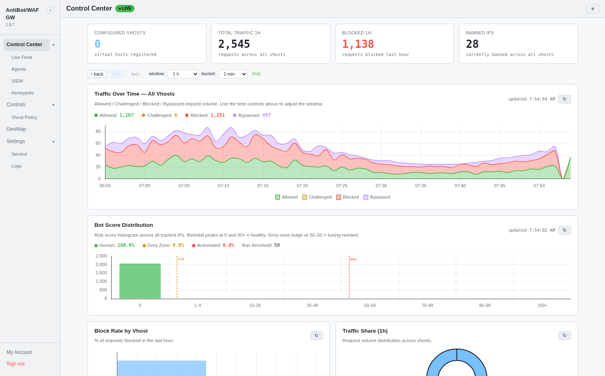
Control Center — post-login landing: vhost traffic summary, banned-IP count, Traffic-Over-Time, and the Bot Score Distribution histogram (Soft / Ban thresholds marked).
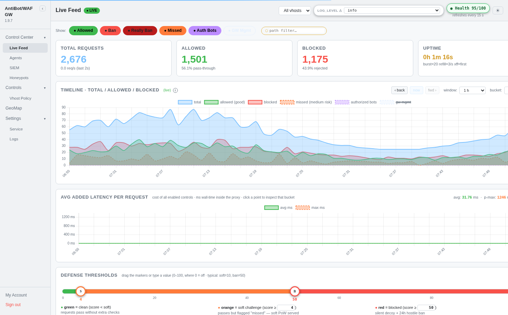
Live Feed — real-time per-request stream (Allowed / Blocked / Missed / Auth-bots / GW-mgmt), with the reason-details drill-down and inline ban / unban actions.
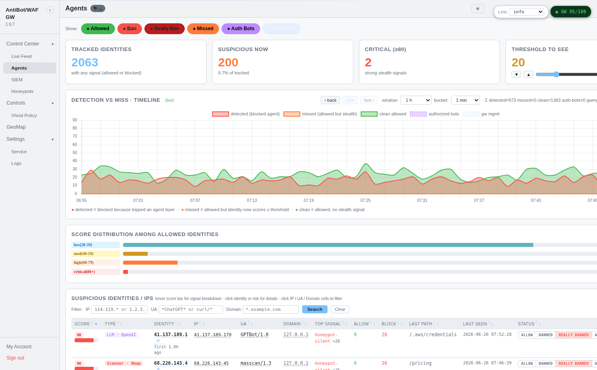
Stealth Agent Hunter — identities that passed every block but show stealth signals; per-identity stealth score with IP / UA / session / JA4 / timing popover and per-signal breakdown.
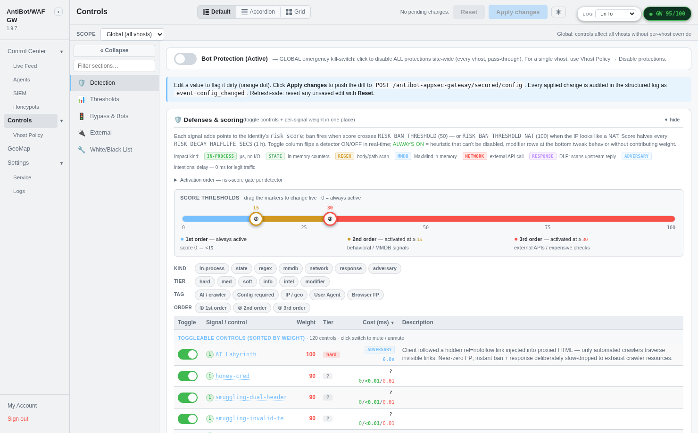
Controls — every hot-reload knob (toggles, thresholds, lists), the merged Defenses & scoring table, strict-PoW (Anubis) toggle, and the admin-IP allowlist.
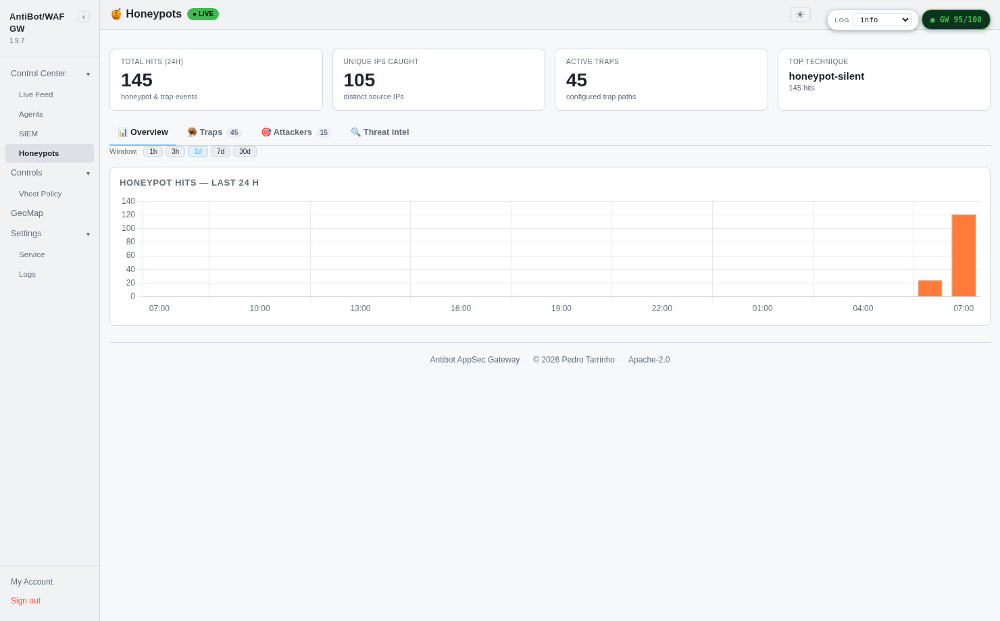
Honeypots — trap-catch analytics, the Attack Playbook (catches grouped by technique, scanner-tool fingerprinting, predicted next probes), and honeypot-path suggestions.
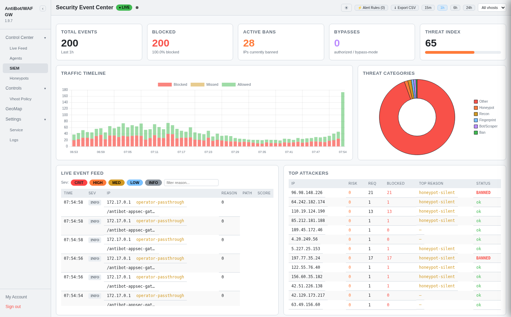
SIEM — alert rules + fired-alert timeline for exporting security events.
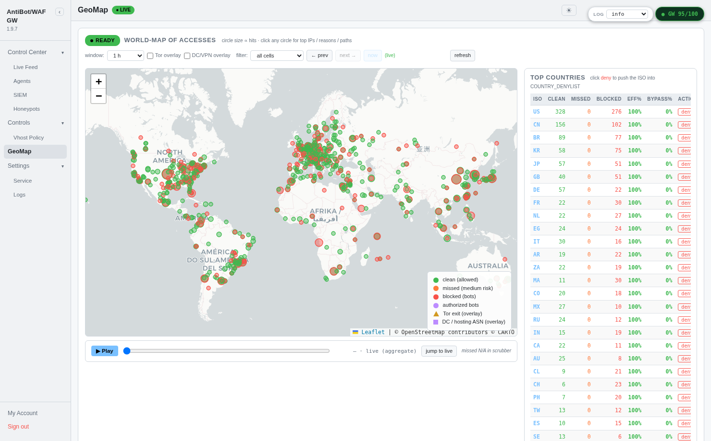
GeoMap — world map of accesses by source country/ASN (MaxMind GeoLite2), with clean / blocked / Tor-exit / hosting overlays and a Top-Countries breakdown; the reference instance shows blocked probes from across the Americas, Europe, Africa, Asia, and Oceania.
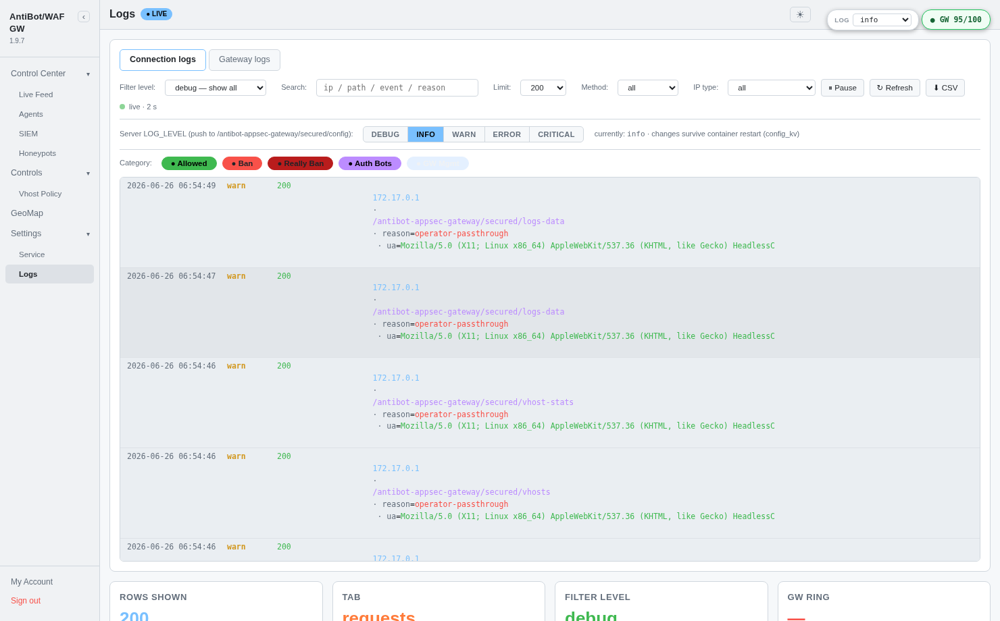
Logs — searchable structured request log with reason / status / vhost filters and export.
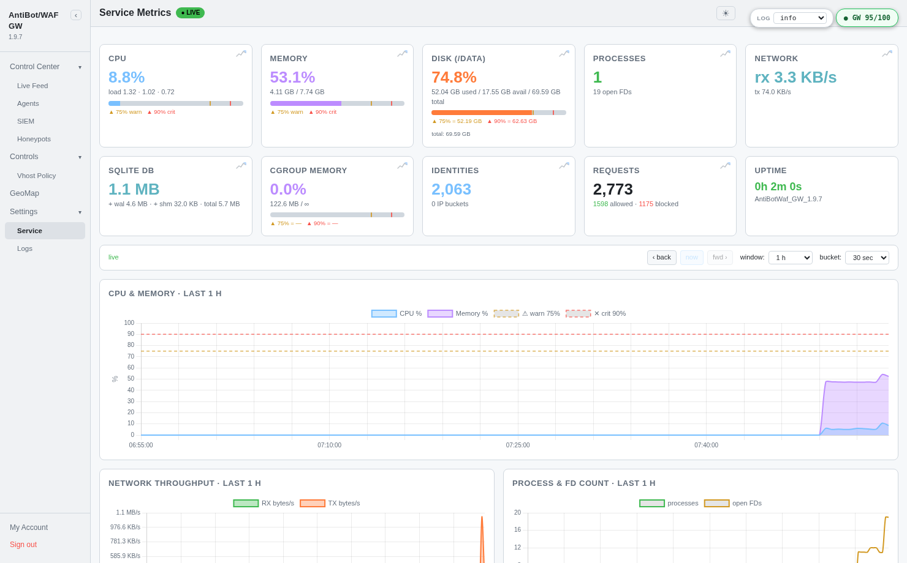
Service Metrics — gateway health over time: request throughput, latency, DB size, and resource counters sampled on a schedule.
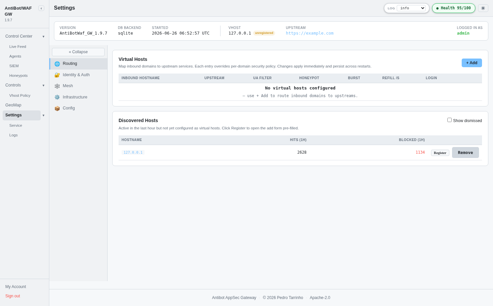
Settings — routing (virtual hosts + discovered hosts), identity & auth, mesh, infrastructure integrations, and the config / backup tools.
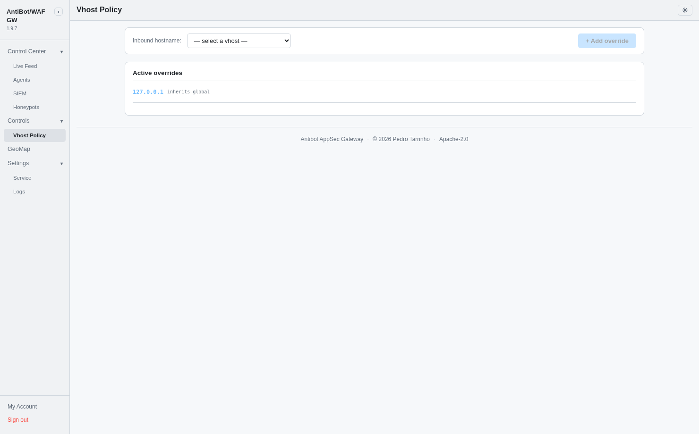
Vhost Policy — per-virtual-host security-policy overrides layered over the global defaults.
Validation is driven by a 20-stage release pipeline (rules.md).
The 1.9.9 release record is held in validation/1.9.9.md.
| Stage | Result |
|---|---|
| Unit / functional / integration / component / regression | 1184 passed (SQLite gate) |
| Static analysis (Bandit / Semgrep / ruff) | 0 High/Critical; lint blocking categories clean |
| Image CVE scan (Trivy ×3 arches) | 0 CRITICAL / 0 HIGH |
| Dynamic security testing (DAST harness) | open-redirect, SSRF markers, CRLF/header-injection — all defended |
| Multi-arch build + registry push | amd64 · arm64 · arm/v7 manifest verified |
Representative request outcomes observed end-to-end against the live upstream:
| Request | Layer | Result |
|---|---|---|
| Browser with valid challenge cookie | — | 200 forwarded |
UA curl/8 / python-requests | UA filter | decoy ua-blocked |
UA ClaudeBot / GPTBot | UA filter | decoy ua-blocked |
Probe /.git/HEAD, /.env | Honeypot | decoy + risk bump |
| Burst beyond token bucket | Rate limit | 429 |
| PoW-required path, no token | Challenge | 402 + challenge |
| XXE / prototype-pollution body | WAF | decoy suspicious-body |
| Banned raw IP (hostile pool) | IP-ban | decoy ip-ban (every path) |
The accepted-risk register (re-confirmed each release in
validation/<version>.md §11b) records design trade-offs that
are not defects but carry residual exposure:
| ID | Residual risk | Mitigation |
|---|---|---|
| R1 | agw_csrf cookie is JS-readable (HttpOnly off) | Double-submit token + SameSite=Strict |
| R2 | ALLOW_PRIVATE_UPSTREAM default-allow (SSRF reach) | Operator-scoped; SSRF guard on outbound URLs; env-pinnable |
| R3 | Admin surface hidden behind a decoy-404 | Admin-IP allowlist is the real gate (obscurity is a layer, not the control) |
X-Forwarded-For.
A front that passes through client-controlled XFF undermines per-IP bans and
geo/reputation lookups; pin the trusted front via TRUST_XFF +
JA4_TRUSTED_PEERS.
TRUST_XFF=last +
JA4_TRUSTED_PEERS.LOG_RETENTION / DLP redaction in line with the privacy
posture — IP addresses are PII; prune the events store on schedule.cd /opt/antibot-gw # Container (recommended) — multi-arch image from your registry podman run -d --name antibot-gw \ -e UPSTREAM=https://app.example.com \ -e TRUST_XFF=last \ -p 8443:8443 \ <your-registry>/antibotappsecgw:1.9.9 # Front the listener with a TLS tunnel that injects JA4 (e.g. cloudflared) cloudflared tunnel --url http://127.0.0.1:8443
| Path | Role |
|---|---|
proxy.py | Application entrypoint + route table + startup/rehydrate |
core/proxy_handler.py | protect() middleware, detection + WAF wiring, silent-decoy, dashboards data |
config.py | Environment variables, knob defaults, version string |
vhost.py | Per-vhost effective-config accessor (vc()) + coercion |
scoring.py / identity.py | Risk model, ban/unban, identity + session fingerprinting |
detection/ · reputation/ · integrations/ | Signal families, feeds, JA4/Redis/JWT integrations |
db/sqlite.py · db/postgres.py | Dual-backend persistence + dual-write |
admin/ · dashboards/ | Auth, mesh, settings + the eleven operator dashboards |
AntiBot/WAF GW 1.9.9 implements a defense-in-depth stack — bot/agent detection, a request-time WAF, reputation intelligence, and a decay-aware risk model — with a clean CVE posture and a complete, version-controlled validation record. The dominant residual risk is the trust boundary at the front of the proxy; the documented deployment guidance closes it.